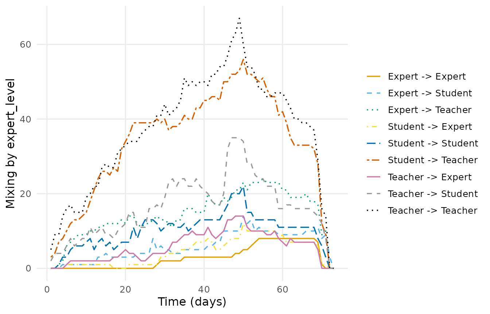

Temporal network analysis: the LA Methods chapter with Dynet
Source:vignettes/ch17-temporal-networks.Rmd
ch17-temporal-networks.RmdChapter 17 of Learning Analytics Methods and Tutorials
builds a temporal network from a MOOC discussion forum and takes it
through visualisation, graph-level measures, node-level measures,
reachability and mixing, using networkDynamic,
tsna, sna and ndtv. This vignette
is the same analysis, in the same order, with Dynet’s verbs and the
chapter’s own data, bundled here as mooc_posts and
mooc_people.
It is not a line-by-line transcription. Two things in the chapter’s code change the numbers, and reproducing them would mean writing worse code to get worse numbers; both are named and measured in what differs.
1. Data
The log is one row per post: who wrote it, who it answers, when, and the thread it sits in.
head(mooc_posts)
#> sender receiver timestamp
#> 1 360 444 2013-04-04 16:32:00
#> 2 356 444 2013-04-04 18:45:00
#> 3 356 444 2013-04-04 18:47:00
#> 4 344 444 2013-04-04 18:55:00
#> 5 392 444 2013-04-04 19:13:00
#> 6 219 444 2013-04-04 19:16:00
#> discussion
#> 1 Most important change for your school or district?
#> 2 Most important change for your school or district?
#> 3 DLT Resources—Comments and Suggestions
#> 4 Most important change for your school or district?
#> 5 Most important change for your school or district?
#> 6 Most important change for your school or district?
head(mooc_people)
#> name experience
#> 1 1 1
#> 2 2 1
#> 3 3 2
#> 4 4 2
#> 5 5 3
#> 6 6 1The chapter recodes the experience level and uses it as the mixing attribute.
people <- transform(
mooc_people,
expert_level = as.character(factor(experience, levels = c(1L, 2L, 3L),
labels = c("Expert", "Student", "Teacher")))
)
with(people, table(expert_level))
#> expert_level
#> Expert Student Teacher
#> 119 151 175Self-replies carry no tie, and a thread with a single post never became an exchange. The chapter drops both.
2. The temporal network
Forum data is threaded: a tie is live from its own post until the
thread falls silent (Saqr & Nouri, 2020). Naming thread
selects that rule, and the timestamps are converted to elapsed days.
dn_full <- dynet(exchanges, from = "sender", to = "receiver",
time = "timestamp", thread = "discussion",
nodes = people, time_unit = "days",
directed = TRUE, loops = FALSE)
summary(dn_full)
#> property value
#> 1 format threaded
#> 2 directed yes
#> 3 vertices 441
#> 4 edge spells 2406
#> 5 distinct pairs 1907
#> 6 time unit days
#> 7 observed from 0
#> 8 observed to 72.01111
#> 9 span 72.01111
#> 10 bin width 1
#> 11 time bins 73
#> 12 mean snapshot density 0.0035
#> 13 temporal density not computed
#> 14 sessions none
#> 15 vertex attributes experience, expert_level3. The active subnetwork
The chapter keeps the vertices with more than 20 ties.
induce_subgraph() takes the condition directly.
dn <- induce_subgraph(dn_full, degree > 20)
dn
#> # Temporal network (threaded format, directed) | a cograph netobject
#> # 45 vertices | 686 edge spells | 428 distinct pairs
#> # observed from 0.1138889 to 72.01111 days, binned every 1
#> # vertex attributes: experience, expert_level
#>
#> from to start end duration weight
#> 219 444 0.1138889 69.47778 69.36389 1
#> 310 444 0.1680556 68.38681 68.21875 1
#> 19 310 0.2784722 14.10486 13.82639 1
#> 19 444 0.2909722 69.47778 69.18681 1
#> 30 444 0.8791667 69.47778 68.59861 1
#> 30 444 0.8819444 68.38681 67.50486 1
#> thread
#> Most important change for your school or district?
#> Submitting Questions for the Expert Panel
#> How important is teacher training in a digital learning transition phase?
#> Most important change for your school or district?
#> Most important change for your school or district?
#> Submitting Questions for the Expert Panel
#> # 680 more spells. summary() describes the network; plot() draws it.4. Visualisation
plot(dn, type = "network")
Four windows across the course, the chapter’s four
network.extract() panels.
plot(dn, type = "snapshots", panels = 4)
#> Drawing 4 of 72 bins, evenly spaced across the window.
What those panels hold, week by week:
weekly <- snapshots(dn, start = 1, end = 22, step = 7, window = 7)
weekly_summary <- summary(weekly)
knitr::kable(weekly_summary, caption = "Ties, active participants and weight per week.")| time | ties | nodes | weight |
|---|---|---|---|
| 1 | 58 | 29 | 75 |
| 8 | 95 | 38 | 128 |
| 15 | 137 | 41 | 193 |
| 22 | 154 | 44 | 210 |
Who was active, and when.
plot(dn, type = "timeline", top = 25)
Ties forming and dissolving, day by day.
turnover <- events(dn, measure = c("formation", "dissolution"),
start = 0, end = 72, step = 1, window = 1)
plot(turnover)
The chapter’s proximity timeline.
plot(dn, type = "proximity", slices = 20)
5. Graph-level measures
A seven-day rolling density.
weekly_density <- metrics(dn, measure = "density",
start = 14, end = 60, step = 1, window = 7)
plot(weekly_density)
Density over the whole period, and the time-integrated density that accounts for how long each tie was actually live.
scalars <- metrics(dn, measure = c("edges", "density", "temporal_density"),
window = "all")
scalar_table <- as.data.frame(scalars)
knitr::kable(scalar_table, caption = "Aggregate structure.")| time | measure | value |
|---|---|---|
| 0.1138889 | edges | 428.0000000 |
| 0.1138889 | density | 0.2161616 |
| 0.1138889 | temporal_density | 0.0634832 |
Reciprocity, on the full network as in the chapter.
reciprocity <- metrics(dn_full, measure = "reciprocity",
start = 1, end = 73, step = 1, window = 1)
plot(reciprocity)
The dyad census. window = 0 samples at each instant,
which is what tSnaStats() does by default.
dyad_census <- metrics(dn, measure = c("mutual", "asymmetric", "null"),
start = 0, end = 72, step = 1, window = 0)
plot(dyad_census)
Degree centralisation.
centralisation <- metrics(dn, measure = "centralization_degree",
start = 1, end = 73, step = 1, window = 1)
plot(centralisation)
6. Node-level measures
The chapter runs a while loop per centrality. One call
takes all three directions at once.
degree_series <- dyn_centrality(dn, measure = "degree",
mode = c("all", "in", "out"),
start = 1, end = 73, step = 1, window = 1)
degree_summary <- summary(degree_series, by = "measure")
knitr::kable(degree_summary, caption = "Degree, in-degree and out-degree per day.")| measure | n | mean | sd | min | max | peak_time |
|---|---|---|---|---|---|---|
| degree | 3285 | 5.765601 | 7.273446 | 0 | 52 | 49 |
| degree_in | 3285 | 2.882801 | 5.477055 | 0 | 35 | 50 |
| degree_out | 3285 | 2.882801 | 2.706619 | 0 | 19 | 31 |
degree <- dyn_centrality(dn, measure = "degree",
start = 1, end = 73, step = 1, window = 1)
plot(degree, top = 10)
Closeness, betweenness and eigenvector, again in one call.
other_centrality <- dyn_centrality(dn,
measure = c("closeness", "betweenness",
"eigenvector"),
start = 1, end = 73, step = 1, window = 1)
other_summary <- summary(other_centrality, by = "measure")
knitr::kable(other_summary, caption = "Three centralities over the same grid.")| measure | n | mean | sd | min | max | peak_time |
|---|---|---|---|---|---|---|
| betweenness | 3285 | 34.5716895 | 98.4872310 | 0 | 974.0571 | 31 |
| closeness | 3285 | 0.4221442 | 0.2069263 | 0 | 1.0000 | 1 |
| eigenvector | 3285 | 0.2351984 | 0.2028102 | 0 | 1.0000 | 1 |
betweenness <- dyn_centrality(dn, measure = "betweenness",
start = 1, end = 73, step = 1, window = 1)
plot(betweenness, top = 10)
Aggregate centrality can be read straight off the vertex table, so ranking participants needs no second call.
ranked <- as.data.frame(dn, what = "nodes",
measure = c("degree", "betweenness", "eigenvector"))
top_ranked <- head(ranked)
knitr::kable(top_ranked, caption = "The vertex table carries aggregate centrality.")| name | experience | expert_level | degree | betweenness | eigenvector |
|---|---|---|---|---|---|
| 1 | 1 | Expert | 20 | 37.308745 | 0.4188396 |
| 5 | 3 | Teacher | 10 | 4.222691 | 0.3152262 |
| 6 | 1 | Expert | 13 | 4.759524 | 0.3337165 |
| 7 | 2 | Student | 26 | 34.113923 | 0.5748078 |
| 11 | 3 | Teacher | 47 | 180.530502 | 0.8963590 |
| 13 | 2 | Student | 15 | 16.629447 | 0.4051050 |
7. Reachability
The chapter seeds its forward path search on participant 444. Dynet addresses vertices by name, so the seed is the name.
forward <- paths(dn, from = "444", direction = "forward")
forward
#> # Time-respecting paths from '444', from t = 0.1138889
#> # reaches 44 of 44 other vertices | time in days
#> node reachable arrival_time attained latency n_hops n_paths
#> 1 TRUE 5.484028 TRUE 5.370139 2 1
#> 5 TRUE 33.213194 TRUE 33.099306 2 1
#> 6 TRUE 37.055556 TRUE 36.941667 2 1
#> 7 TRUE 11.863889 TRUE 11.750000 3 1
#> 11 TRUE 12.383333 TRUE 12.269444 1 1
#> 13 TRUE 26.195139 TRUE 26.081250 2 1
#> 15 TRUE 6.135417 TRUE 6.021528 5 1
#> 17 TRUE 20.250694 TRUE 20.136806 4 3
#> 19 TRUE 2.222222 TRUE 2.108333 1 1
#> 24 TRUE 21.067361 TRUE 20.953472 2 1
#> 26 TRUE 25.313889 TRUE 25.200000 2 1
#> 27 TRUE 21.071528 TRUE 20.957639 3 1
#> # 33 more rows. summary() aggregates them; plot() draws the tree.
plot(forward, base_size = 9)
The chapter’s transmissionTimeline() becomes a
trajectory tree, which carries the route counts and branching
probabilities the original does not.
tree <- path_trajectories(forward)
plot_path_trajectories(tree, measure = "time", base_size = 9)
8. Mixing between experience levels
mix <- mixing(dn, attribute = "expert_level",
start = 1, end = 73, step = 1, window = 1)
mixing_summary <- summary(mix)
mixing_pairs <- head(mixing_summary, 9)
knitr::kable(mixing_pairs,
caption = "Ties within and between experience levels.")| measure | n | mean | sd | min | max | peak_time |
|---|---|---|---|---|---|---|
| Expert -> Expert | 73 | 2.890411 | 3.138301 | 0 | 8 | 54 |
| Expert -> Student | 73 | 5.849315 | 3.703119 | 0 | 14 | 50 |
| Expert -> Teacher | 73 | 14.315069 | 6.220211 | 0 | 24 | 55 |
| Student -> Expert | 73 | 4.315068 | 3.620454 | 0 | 12 | 50 |
| Student -> Student | 73 | 10.000000 | 4.725816 | 0 | 22 | 50 |
| Student -> Teacher | 73 | 33.493151 | 14.732922 | 0 | 56 | 50 |
| Teacher -> Expert | 73 | 5.808219 | 3.984894 | 0 | 14 | 48 |
| Teacher -> Student | 73 | 16.232877 | 8.280701 | 0 | 35 | 47 |
| Teacher -> Teacher | 73 | 36.821918 | 15.738614 | 0 | 67 | 49 |
plot(mix)
nodemix drops one cell as the ergm base
category, so the chapter plots eight of the nine group pairs.
mixing() reports all nine.
What differs
Two differences from the published figures, both deliberate.
The spell rule. The chapter sets every tie in a
discussion to start at the discussion’s first post. Saqr and
Nouri (2020), which thread = implements, starts each tie at
its own post. Only 299 of the 2406 surviving posts are opening
posts, so the chapter’s spells are longer on average and its
time-integrated density is correspondingly higher.
Ties that never happened. The chapter builds its
static edge list before dropping single-post discussions, so pairs enter
the network with no activity at all. networkDynamic() then
gives each of them activity across the entire observation window,
flagged censored at both ends — permanently-on ties that no message ever
created. That is why the chapter reports 433 ties in the active
subnetwork where this reports 428, and why its day-73 statistics are
non-empty for a day past the end of observation.
Neither is a fault in the chapter’s argument. Both are worth knowing before its numbers are reused.
9. Do the two implementations agree?
The differences above are definitional, not numerical: they come from
how the network is built, not from how it is measured. Given
the same network, Dynet and tsna/sna should
return the same values, and this section checks that rather than
asserting it. The chunks run when the four packages the chapter uses are
installed.
The comparison network is built from Dynet’s own spell table, so both
sides measure the same thing. Turning vertex names back into the
integers networkDynamic wants is the bookkeeping Dynet
hides, and it belongs inside a function rather than in the analysis.
as_network_dynamic <- function(x) {
spells <- as.data.frame(x)
vertices <- as.data.frame(x, what = "nodes")
ids <- stats::setNames(seq_len(nrow(vertices)), vertices$name)
base <- network::network.initialize(length(ids), directed = TRUE)
nd <- networkDynamic::networkDynamic(
base.net = base,
edge.spells = data.frame(onset = spells$start, terminus = spells$end,
tail = as.integer(ids[spells$from]),
head = as.integer(ids[spells$to])),
verbose = FALSE
)
network::set.vertex.attribute(nd, "vertex.names", vertices$name)
nd
}
nd <- as_network_dynamic(dn)Four quantities, one from each level the chapter works at: a graph-level scalar, a graph-level series, a node-level series, and a path result. Each helper reports how many values it lined up as well as the largest difference, so an empty comparison cannot pass as agreement.
graph_agreement <- function(quantity, result, reference) {
measured <- as.data.frame(result)
reference <- as.numeric(reference)
stopifnot("the two series have different lengths" =
length(reference) == nrow(measured))
data.frame(quantity = quantity, compared = nrow(measured),
max_abs_difference = max(abs(measured$value - reference)))
}
node_agreement <- function(quantity, result, reference) {
measured <- as.data.frame(result)
reference <- as.matrix(reference)
flat <- data.frame(
time = rep(sort(unique(measured$time)), times = ncol(reference)),
node = rep(colnames(reference), each = nrow(reference)),
reference = as.numeric(reference), stringsAsFactors = FALSE
)
both <- merge(measured, flat, by = c("time", "node"))
stopifnot("a node-day was lost in the join" = nrow(both) == nrow(measured))
data.frame(quantity = quantity, compared = nrow(both),
max_abs_difference = max(abs(both$value - both$reference)))
}
arrival_agreement <- function(quantity, result, reference, vertices) {
measured <- as.data.frame(result)
theirs <- stats::setNames(reference$tdist, vertices)
mine <- stats::setNames(measured$latency, measured$node)
shared <- intersect(names(theirs)[is.finite(theirs)], names(mine))
data.frame(quantity = quantity, compared = length(shared),
max_abs_difference = max(abs(theirs[shared] - mine[shared])))
}
participants <- network::network.vertex.names(nd)
aggregate_density <- metrics(dn, measure = "density", window = "all")
mutual_series <- metrics(dn, measure = "mutual",
start = 1, end = 73, step = 1, window = 1)
degree_per_day <- dyn_centrality(dn, measure = "degree",
start = 1, end = 73, step = 1, window = 1)
forward_from_444 <- paths(dn, from = "444")
their_density <- sna::gden(nd)
their_mutual <- tsna::tSnaStats(nd, "mutuality", start = 1, end = 73,
time.interval = 1, aggregate.dur = 1)
their_degree <- tsna::tSnaStats(nd, "degree", start = 1, end = 73,
time.interval = 1, aggregate.dur = 1,
cmode = "freeman")
their_paths <- tsna::tPath(nd, v = match("444", participants), direction = "fwd")
agreement <- rbind(
graph_agreement("aggregate density", aggregate_density, their_density),
graph_agreement("mutual dyads per day", mutual_series, their_mutual),
node_agreement("degree per node per day", degree_per_day, their_degree),
arrival_agreement("earliest arrival time", forward_from_444, their_paths,
participants)
)
knitr::kable(agreement,
caption = "Dynet against tsna and sna on the same network.")| quantity | compared | max_abs_difference |
|---|---|---|
| aggregate density | 1 | 0 |
| mutual dyads per day | 73 | 0 |
| degree per node per day | 3285 | 0 |
| earliest arrival time | 45 | 0 |
References
Saqr, M. (2024). Temporal network analysis: Introduction, methods and analysis with R. In M. Saqr & S. López-Pernas (Eds.), Learning Analytics Methods and Tutorials. Springer. https://doi.org/10.1007/978-3-031-54464-4_17
Saqr, M., & Nouri, J. (2020). High resolution temporal network analysis to understand and improve collaborative learning. Proceedings of the Tenth International Conference on Learning Analytics & Knowledge, 314-319.